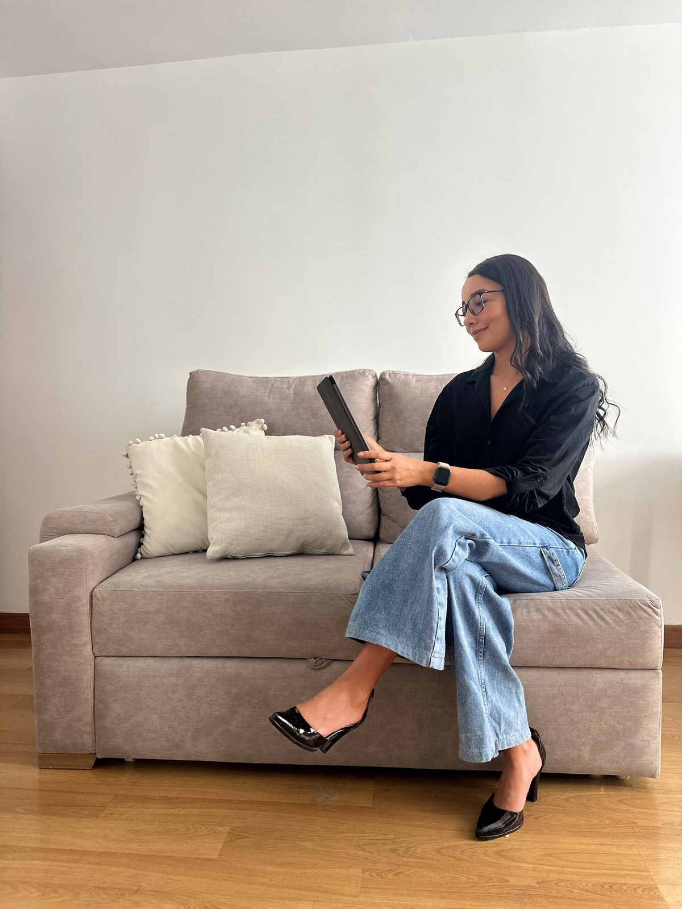

Un espacio seguro donde partimos del conocimiento científico para explorar tu historia y recuperar tu equilibrio emocional.
Un espacio íntimo y seguro para explorar tu historia, comprender lo que estás viviendo y aprender a relacionarte de una manera más consciente con tus emociones.
Acompañamos cada proceso desde una mirada humana e integral, entendiendo que más allá de las etiquetas diagnósticas, lo verdaderamente importante es comprender el sentido de aquello que te genera malestar, cómo influye en tu vida, en tus relaciones y en la manera en que te vinculas contigo mismo/a.
La terapia se convierte así en un espacio para recuperar equilibrio emocional, fortalecer recursos internos y construir cambios más conscientes y sostenibles.
Un espacio seguro para compartir, comprenderte y crecer junto a otros. A veces, escuchar historias similares a la nuestra nos ayuda a mirar nuestros procesos con más compasión y menos juicio.
Más que enfocarnos en etiquetas o diagnósticos, buscamos entender qué hay detrás de lo que sientes, cómo influye en tu vida cotidiana y qué nuevas formas de relación contigo y con los demás puedes construir.
El grupo se convierte así en un lugar de apoyo, aprendizaje y transformación compartida.
Un espacio de orientación y construcción clínica para psicólogos que están iniciando su práctica o desean fortalecer su manera de acompañar procesos terapéuticos desde un enfoque más humano, claro y coherente con su estilo profesional.
Más que enfocarnos únicamente en técnicas o protocolos, buscamos comprender el sentido del caso, la relación terapéutica y las dinámicas que sostienen el malestar, para construir intervenciones más conscientes, organizadas y efectivas.
La mentoría está pensada como un espacio cercano, seguro y colaborativo, donde puedas desarrollar confianza clínica, ampliar tu mirada terapéutica y encontrar herramientas útiles para tu práctica cotidiana.

Con más de 7 años de experiencia en consulta, creo firmemente en una psicología cercana, clara y práctica, que no busca simplemente eliminar aquello que duele, sino ayudarte a comprenderlo, darle un lugar y abrir nuevas posibilidades.
Para mí es muy importante que la terapia no sea un espacio frío y distante, sino un lugar donde puedas hablar como lo haces fuera de consulta, sin tener que medir cada palabra. Me impulsa mirar y conocer a cada consultante antes que al nombre que le pongamos a lo que le ocurre.
Trabajo desde el análisis de la conducta y un enfoque contextual basado en la evidencia científica, utilizando un lenguaje sencillo y humano, adaptado a cada persona.
Mi objetivo no es únicamente reducir síntomas, sino comprender qué función cumplen dentro de tu historia, qué los mantiene y cómo están impactando tu bienestar, tus relaciones y tu vida cotidiana.
A partir de esa comprensión, construimos herramientas y estrategias que te permitan desarrollar un mayor equilibrio emocional y construir una vida más coherente con aquello que es importante para ti
El primer paso es conocernos. En las sesiones podrás poner en palabras lo que estás viviendo y lo que necesitas, en un espacio cuidado y sin juicios, donde la atención esté puesta en ti.
Juntos iremos entendiendo qué hay detrás de lo que te pasa. Más que analizar, se trata de observar tu historia y tu manera de relacionarte, para darle un sentido y poder mirarlo con mayor claridad.
Recibirás recursos ajustados a tu forma de ser y a tu vida real. No son fórmulas cerradas ni etiquetas vacías, sino herramientas que podrás aplicar en tu día a día para afrontar los desafíos de manera más flexible.
El proceso no se limita a la sesión. Te acompañamos a lo largo del camino para que lo aprendido se integre poco a poco y puedas acercarte a la vida que realmente quieres construir.
— María G.
— Anónimo
— Paola, Colombia
— Juliana y Sergio, Colombia.
— Anónimo.
— Dani, Australia.
Dar el primer paso nunca es fácil, pero es el más importante. Escríbeme y evaluaremos juntos cómo puedo ayudarte a recuperar tu bienestar.
psc.alejandraforero@gmail.com
+34634952651
Consulta
Online
© 2026 Alejandra Forero Psicología